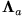
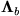
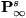
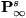
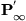

|
You are here : Control
System Design - Index | Book Contents | Appendix
D | Section D.3
D. Properties of Continuous Time Riccati Equation
D.3 The stabilizing solution of the CTARE
We see from Section D.2 that we have as many solutions to the CTARE as
there are ways of partitioning the eigenvalues of H into the
groups 
and .
Provided (A, B) is stabilizable and provided  has no unobservable modes in the imaginary axis, then H has no
eigenvalues in the imaginary axis. In this case, there exists a unique
way of partitioning the eigenvalues so that
contains only the stable eigenvalues of H. We call the
corresponding (unique) solution of the CTARE the stabilizing solution
and denote it .
has no unobservable modes in the imaginary axis, then H has no
eigenvalues in the imaginary axis. In this case, there exists a unique
way of partitioning the eigenvalues so that
contains only the stable eigenvalues of H. We call the
corresponding (unique) solution of the CTARE the stabilizing solution
and denote it .
Properties of the stabilizing solution are given in the following:
Lemma 1.4
| (a) |
The stabilizing solution has the property that
the closed loop A matrix;
where
has eigenvalues in the open left half plane. |
| (b) |
If
is detectable then the stabilizing solution is the only
non-negative of the CTARE |
| (c) |
If
has no unobservable modes inside the stability boundary then the
stabilizing solution is positive definite and conversely. |
| (d) |
If
has an unobservable modes outside the stabilizing region, then
in addition to the stabilizing solution, there exists and least
one other non-negative solution of the CTARE. However, the
stabilizing solution,
has the property that
where 
is any other solution of the CTARE. |
Proof
For part (a), we argue as follows:
Consider (D.1.11) and (D.1.14). Then
which implies
If we only consider the first row in (D.3.5), then using (D.1.8) we
have
Hence, the closed loop poles are the eigenvalues of Hs
and, by construction, these are stable.
We leave the reader to pursue parts (b), (c) and (d) by studying the
references given at the end of Chapter 24.

|